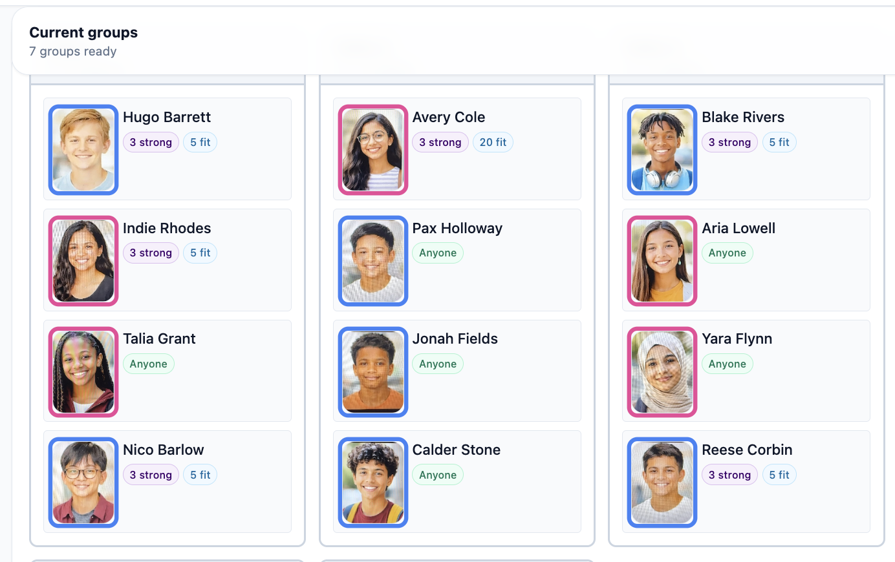
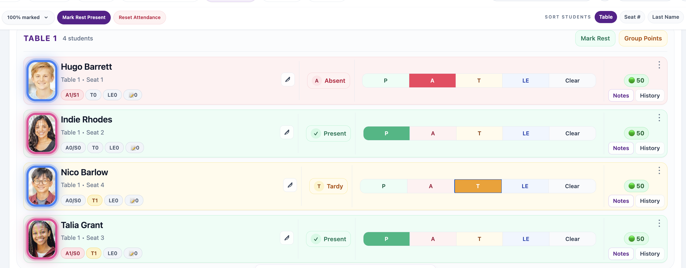

Regenerate balanced groups in seconds
When things change, your seating chart changes with you. Instantly.
Built for real classrooms • Everyday classroom tools • Works offline
Create seating charts based on who works well together, who needs space, and who needs a seat up front. Take attendance, learn names, and keep track of student notes and behavior—all in one place. Built by a classroom teacher to simplify the routines you handle every day.
Less logistics. More teaching.
No charge for 45 days. 2026-27 early adopter pricing is $20 per teacher per year after the trial. Initial setup requires a desktop or laptop.

Hi — I’m Marty Fish, and I teach a 7th grade STEM class.
I tried all of the usual “teacher tricks” for seating charts: choose-your-own, random, clock partners. I was always disappointed. Either students were frustrated, certain students needed to be separated, or I would spend hours rebuilding everything from scratch every time I needed a new chart.
And seating wasn’t the only issue. Learning student names (and pronouncing them correctly) was tough. And taking attendance? I was always losing my clipboard. All of it added to the daily mental load.
I wanted something that could handle real classroom dynamics, help me learn my students faster, and keep the everyday classroom tools in one place. So I built ClassSeats.
Now creating a new seating chart is as simple as pressing a button. Students who need to be separated are separated. Students who need preferential seating get preferential seating. I can flip through flashcards to learn names, hear them pronounced correctly, and take attendance from my phone.
More time. Better relationships. Ditch the clipboard.
I'm a 31-year teacher veteran, and I've always procrastinated seating charts because I hate the logic puzzle they create. These two need to sit together. These two can't. Some need to be near the board. Others need to be close to my desk.
ClassSeats has taken what used to be an hours-long job and made it simple. The easy attendance, discipline tracking, student notes, flashcards with photos, and pronunciation recordings are an added bonus. Even my subs love the printable seating charts with pictures.
- Lisa, 8th Grade Art
As a substitute teacher, ClassSeats makes me feel confident walking into a classroom. Being able to see student photos and a clear seating chart means I know who is present and who is absent within seconds.
I can spend less time figuring things out and more time teaching.
- Ryan, 8th Grade Substitute Teacher
I've been loving it. Taking attendance is a breeze, and it's so easy to quickly add behavior data points.
- Bethany, 7th Grade Engineering
This app has been a real game changer for me! It saves me so much time. I can make new seating charts with the push of a key. It is easy to edit and create different variations. I don't have to worry that I left a student off the chart or spelled their name wrong or put them next to somebody that they are not supposed to sit next to. I now have attendance, rosters and seating charts all in one place. I love it! So glad I found this app!
- Sharon, 7th Grade Science
Before ClassSeats, seating charts were the bane of my existence--the least favorite part of my job. I hated spending hours trying to figure out who to put where, erase and move people countless times, and think, change, think, change, only to do it all over again a few weeks later. Now, I have the flexibility to offer a change in seats more frequently, as well as to allow students to have more choice in their seating preferences. I spent about 15 minutes creating my seating charts instead of the typical 1-2 hours accompanied by countless headaches.
I also love how I can do record keeping (ie - attendance, ready to learn points, etc.) all in one place.
- Dawn, 7th Grade Language Arts
ClassSeats has been a time-saver when it comes to creating seating charts. Rather than having to use a lot of "brain power" to come up with my own, ClassSeats allows me to use student voice to assist with placements, and does those placements at the click of a button! Not only this, but the program has allowed me to elevate my ability to communicate with both students and parents about student behavior.
I can quickly track absences, behavior incidents, etc. and refer back as a running record, which has helped better inform conversations and elevate my ability to work with families.
- Jillian, 7th Grade Language Arts
One of the 'invisible' parts of teaching is making seating charts. As a teacher, we can all sympathize that sometimes it is a total headache. Using ClassSeats has become a massive time-saver and smart, intuitive solution. It is incredibly user-friendly and checks all the boxes of what every teacher needs to think of.
I would recommend it to any educator looking to reclaim time!
- Savannah, 8th Grade Science
Before I started using ClassSeats, the mental gymnastics involved in balancing behavior and educational needs when creating seating charts or groups could be pretty overwhelming. Now, it's much easier to organize seating and groups in a way that feels thoughful while considering personalities, learning needs, and classroom dynamics. The process is much quicker, and I don't feel like I'm constantly second-guessing my decisions.
ClassSeats saves me time whenever I need to rearrange seating or create new groups. The students now get new seats more often, which they are happy about, and I no longer avoid one of my least favorite tasks as a teacher.
- Rachel, 7th Grade Science
What I especially love about the seating chart creation is that I can put in my requirements, such as having certain students sitting close together or apart, sitting in preferred seating that I designate, marked has having accommodations, etc. one time (always with the option to edit, as needed.) All seating plans then take these requirements into account. Big time-saver!
- Kristin, K-8, Specials
Keep certain students apart. Seat others together intentionally. Honor support needs without rebuilding your chart from scratch.
Collect student preferences (if you choose) and generate seating that considers both their input and your constraints.
New unit? Time for a change? Regenerate your seating chart in seconds.
Built-in flashcards include student photos on one side, and full name with an optional 10-second pronunciation recording on the other. Students can record their own name, or you can record it for them.
Attendance, notes, points, and student photos — all in one focused view.
A quick look at the workflows teachers use every day.
When things change, your seating chart changes with you. Instantly.



You can get started quickly. No complicated setup required.
ClassSeats is local-first. Your data stays on your device and optionally in your Google Drive. ClassSeats does not store student data on its own servers.
Yes. ClassSeats Pro includes a free 45-day trial. For 2026-27, early adopters pay $20 per teacher per year after the trial.
For 2026-27, early adopters pay $20 per teacher per year. That rate remains locked in as long as the subscription stays active. Starting in the 2027-28 school year, pricing will be $35 per teacher per year. All pricing is per teacher. No contracts.
Yes. It works on desktop, mobile, and even offline.
A classroom seating chart generator helps teachers quickly create and update seating arrangements, manage student groups, and adjust seating when classroom needs change.
Yes. Seating charts are projection-ready and print-ready.
Start with a free 45-day Pro trial. 2026-27 early adopter pricing is $20 per teacher per year after the trial.
No account required. Start immediately.
Questions, feedback, or district rollout? Email is easiest.
Early Access users may receive updates about future features and pricing. (No student info, please.)
For district/IT questions, see District IT.
If you’re reporting a sync issue, include device + browser, and what you expected vs what happened.